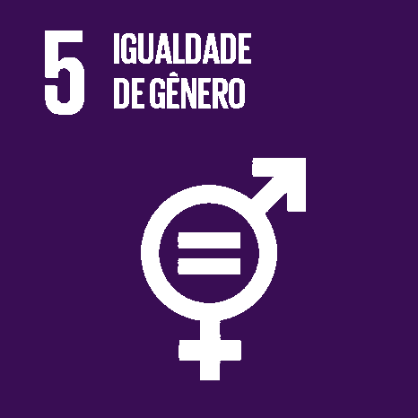

Ciência, tecnologia e inovação são os pontos essenciais para o avanço da sociedade, pois, a ciência permite que a sociedade compreenda um pouco mais sobre a natureza do universo, a ciência é importante para nossa vida, pois nos ajuda a ter uma qualidade de vida muito melhor. A ciência ajuda no avançado da saúde, alimentação, energia, entre muitos outros.
A ciência é bem mais presente no nosso "dia a dia" do que você pensa. Podemos começar citando o desenvolvimento tecnológico. Seus benefícios estão presentes em toda a nossa rotina, facilitando serviços diários e atividades que, hoje, não imaginamos de outra forma.
Incentivar o interesse pela ciência
Pesquisadores, professores e especialistas na área são unânimes: nos últimos dez anos, o Brasil deu um salto significativo na área de ciência e tecnologia, porém muito mais ainda precisa ser feito. Apesar do avanço da presença feminina nas mais variadas áreas do conhecimento, dados mundiais apresentados pela UNESCO, em 2020, apontam que apenas 30% dos cientistas são mulheres. No Brasil, as mulheres pesquisadoras representam 40,3%, e esses números tendem a aumentar, por conta de como essa nova política de ciência e tecnologia precisa ser implementada no país, será um dos assuntos discutidos na próxima edição do projeto Motores do Desenvolvimento do Rio Grande do Norte. O evento está em seu quarto ano de realização e, para esta 9ª edição, o tema escolhido foi Inovação e Tecnologia.